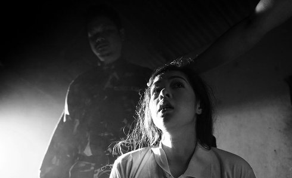

Ang Panahon ng Halimaw
Season of the Devil

Lav Diaz
|
234 min – HD – Tagalog B+S+M: Lav Diaz – K: Larry Manda – T: Adrian Yew Erman – P: Quark Henares, Bianca Balbuena, Bradley Liew, Lav Diaz – V: Films Boutique, Berlin – Mit Piolo Pascual, Shaina Magdayao, Pinky Amador, Bituin Escalante, Hazel Orencio
|
sunday 14 okt 6.30 PM filmmuseum münchen
“Season of the Devil” kicks off in the late ‘70s, after dictator President Marcos institutes a national militia to combat so-called communist dissidents. The effects of this edict play out in the rural town of Gilbon, where militia leaders Ahas (Joel Saracho) and Tenyente (Hazel Orencio) scheme to consolidate power. They achieve this by preying upon the supernatural fears of the populace, accrediting the brutal murders to folkloric spirits. Across the country, poet Hugo Haniway (Piolo Pascual) is separated from his wife Lorena (Shaina Magdayao) when she leaves to set up a medical practice in the suffering Gilbon. Hugo is forced to deal with his ghosts both literally and figuratively, grappling with his guilt and his artistic inertia. (The Playlist)
|
Lav Diaz born in 1958 in Cotabato, Mindanao (Southern Philippines). He graduated in economics with a degree. Before venturing into making feature films he made some short films and documentaries. Since 1993, Lav Diaz has lived in Queens, New York City, with his family. |
|
Films Batang West Side 2002 – Evolution of a Filipino Family 2004 – (1. UX) – Heremias 2006 – Melancholia 2008 – Butterflies Have No Memories 2009 (5. UX) Norte, The End of the History 2013 (8. UX) – From What is Before 2014 (9. UX) – A Lullaby to the Sorrowful Mystery 2016 (11. UX) – The Woman Who Left 2016 (12. UX) – Season of the Devil 2018
|